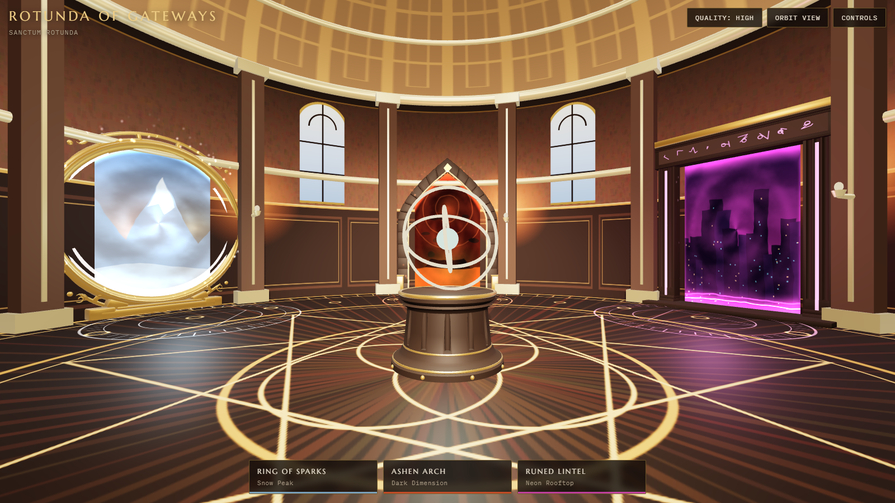
We are building an interactive, real-time 3D recreation of a “Rotunda of Gateways” inspired by the Sanctum Sanctorum in Marvel’s Doctor Strange. The user explores a circular room with three magical doors. Each door can be tuned to one of several environments (“realms”). The user picks a realm, watches the portal change, and walks through the door into that environment and back again. The project runs in the browser using WebGL through three.js, and the doors and furniture are modeled in Blender.
| Proposal challenge | Status | What is implemented |
|---|---|---|
| 1. Sanctum room: walls, floor, ceiling, windows | Done | Round room (radius 9.6 m, height 8 m) with a coffered dome and an oculus, 12 pilasters, 8 arched windows, a large round window, a brass-inlaid floor, sconces and a floating central eye. Furnished with Blender-modeled bookshelves, a relic case, a lectern, an armillary globe and a carved pedestal. |
| 2. Three doors with distinct designs | Done | The door frames are modeled in Blender: a brass sling-ring hoop, a pointed stone arch built from individual blocks, and a stone doorway with a glowing rune band. Animated glow parts are added in code. |
| 3. Several environments per door | Done (9) | Ring of Sparks: Snow Peak, Aurora Lake, Ice Cavern. Ashen Arch: Dark Dimension, Desert Dusk, Ember Canyon. Runed Lintel: Neon Rooftop, Nebula Dais, Mirror Dimension. All can be walked into. |
| 4. Lighting for the room and each environment | Done | Rotunda: a spotlight from the round window with soft shadows, a reflection map for the metals, flickering sconces and a coloured light at each door. Each realm has its own lights, sky, fog and colour palette (§3.5). |
| 5. Magical effects around the doors | Done | Custom GLSL portal shader (noise warping, swirls, expanding rings, glowing edges), spark particles flowing around each door frame, a spinning rune circle on the floor, spinning glow arcs and a gem. |
| 6. Select a door and change its environment | Done | Click a door (detected with ray casting) or press 1–3; pick a realm from the preview cards or with [ ]. The portal cross-fades to the new realm, and the door’s colour and light change to match. |
| 7. Camera controls | Done | First-person walking (WASD/arrows, Shift to run, drag to look) with collision; an orbit view (O, wheel to zoom); on-screen buttons on touch screens; “Step through” walks you to the door automatically. |
| Timeline 5: transitions between rooms | Partial | A colour fade, tinted to the realm, runs as you cross the door. A seamless walk-through with live portals is planned for the final submission (§5). |
The app is written in plain JavaScript using three.js (r128) and the Vite build tool. Each part of the scene lives in its own file: rotunda.js (the room), portal.js (the portal shader and door construction), doors.js, one file per realm in realms/, models.js (loading the Blender models) and main.js (input, camera, travelling between scenes, and the frame loop). The rotunda and each realm are separate scenes. A realm is built the first time you enter it and kept for later visits, and only the scene you are in is drawn. A one-file build is published as a live web page.
The room itself is built in code. The dome is a curved profile spun around the centre axis. The walls are an open cylinder. The floor inlay, wall panels, coffers, windows and rune textures are painted onto images by our own code at startup, using our own noise functions. The realms build their terrain and rocks in code too. For example, mountains and cave walls are simple shapes whose points are pushed around by noise, and the desert is a 170×170 grid raised by noise and coloured by height.
The door frames and furniture are modeled in Blender 5.1 by Python scripts in blender/. The scripts run Blender in the background, build each piece using extrusions, bevels, boolean cuts and arrays, save a .blend file, and export a .glb model. We agreed on fixed rules so the models fit the code: 1 unit = 1 m, the origin is at the floor in the centre of the base, the front faces forward, and the materials have fixed names. The Glow and RuneBand materials are swapped at load time for materials that change colour with the selected realm. Each door opening is modeled to match the shape the portal shader draws. If a model fails to load, the code-built version of that piece is used instead.
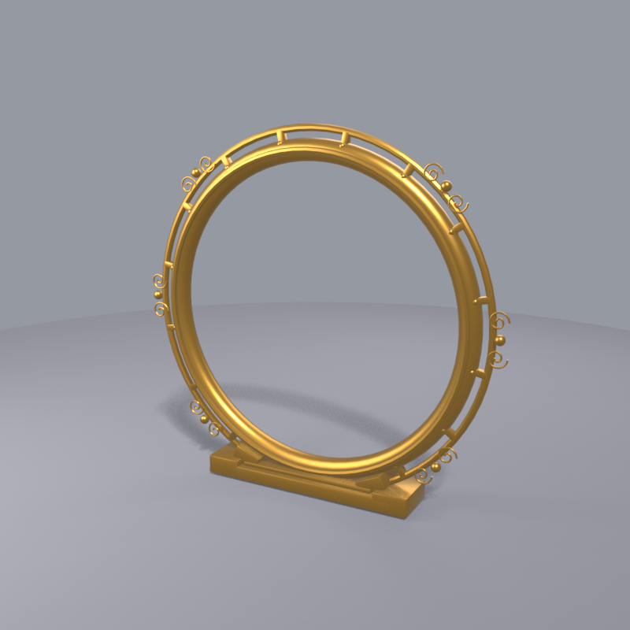
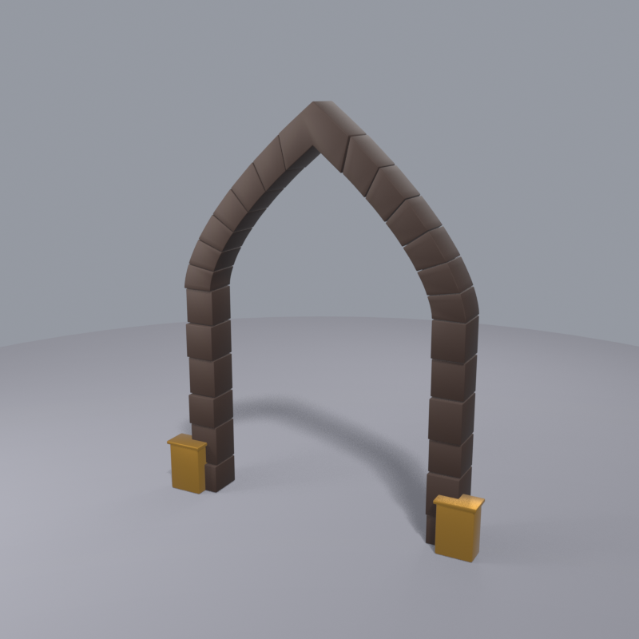
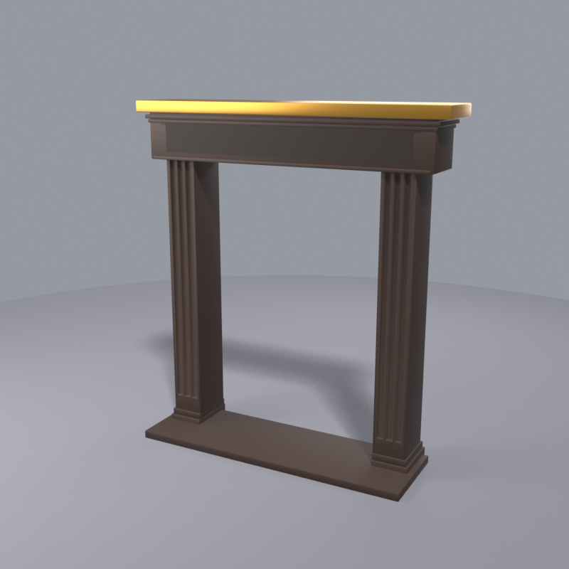
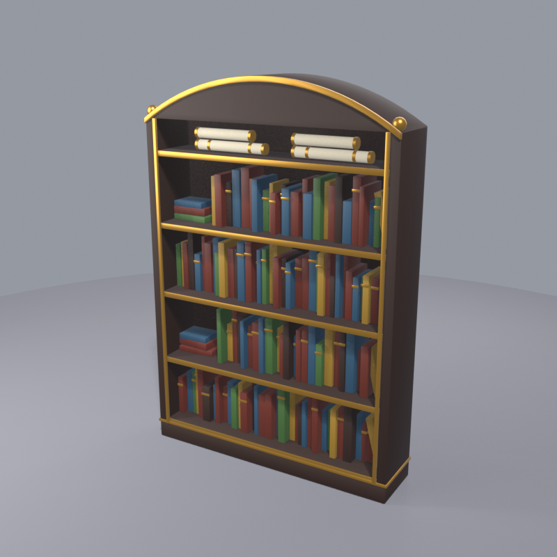
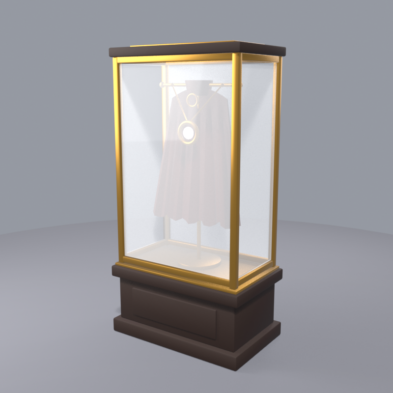
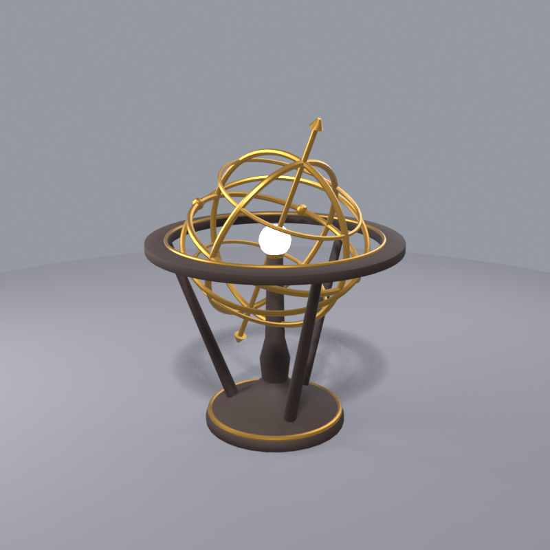
| Model | Triangles | Size | Model | Triangles | Size |
|---|---|---|---|---|---|
| door_ring | 17,064 | 555 KB | prop_bookshelf | 22,392 | 602 KB |
| door_arch | 5,240 | 136 KB | prop_relic_case | 7,548 | 201 KB |
| door_lintel | 3,132 | 98 KB | prop_lectern | 5,844 | 146 KB |
| prop_pedestal | 6,544 | 182 KB | prop_globe | 10,464 | 281 KB |
Each door’s opening is a flat plane drawn by a custom shader. The shader cuts the plane to the door’s shape (a circle, a pointed arch or a rectangle) and throws away pixels outside it. Inside, it bends the realm’s preview image with layered noise, adds swirls and outward-moving rings in the door’s colour, and adds a glow that grows toward the edge. Hovering or selecting a door makes the swirl stronger and the glow brighter. When the realm changes, the shader blends from the old preview to the new one over 0.9 s while the door’s colour and light change with it.
Each door has 240 sparks that flow around its frame, drifting outward and fading. Their colours update every frame, and they are blended additively so overlapping sparks glow. The realms use the same technique for snow, rain, embers, dust, fireflies and floating motes. Other animation includes spinning glow arcs and a gem, a rotating rune circle on the floor, the eye’s rotating rings, flickering flames, bobbing rocks and crystals, and city traffic.
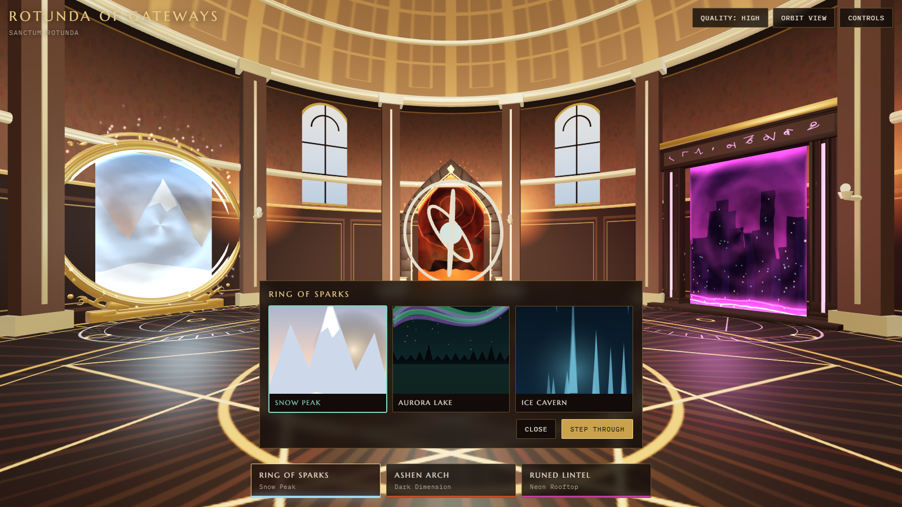
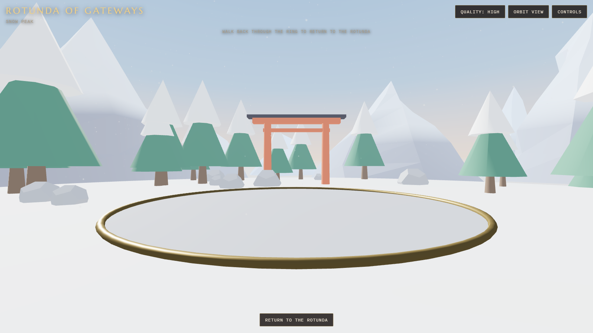
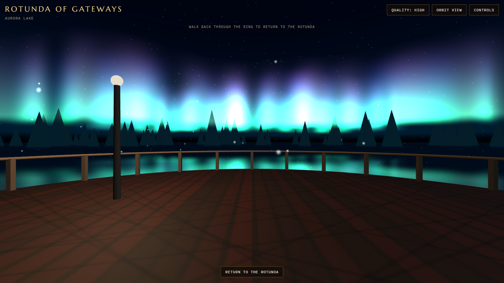
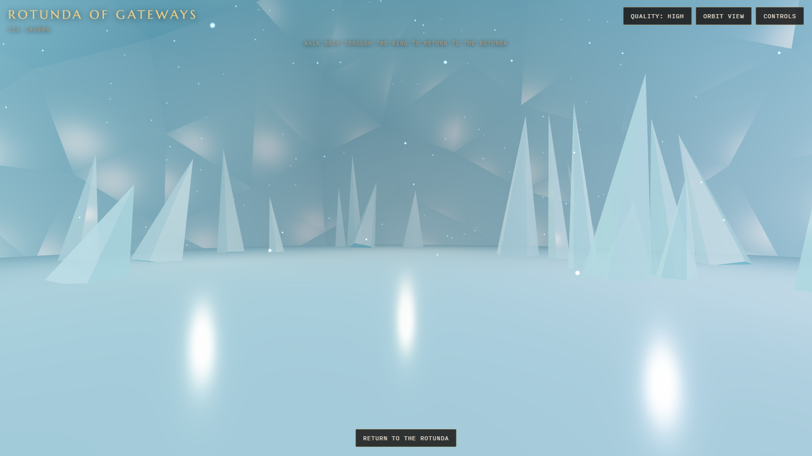
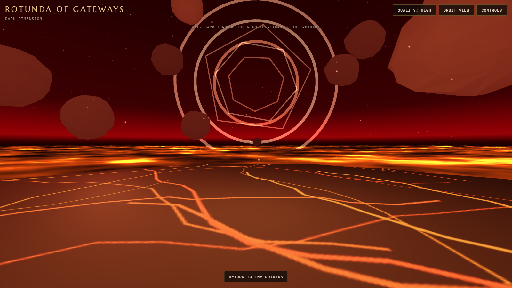
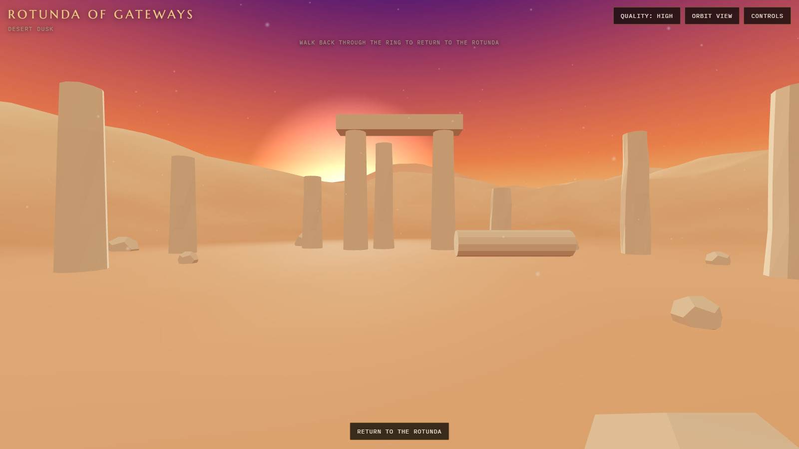
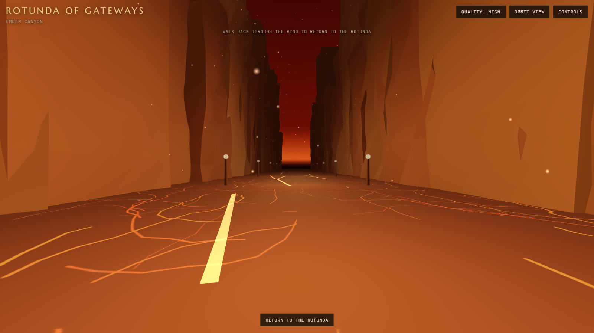
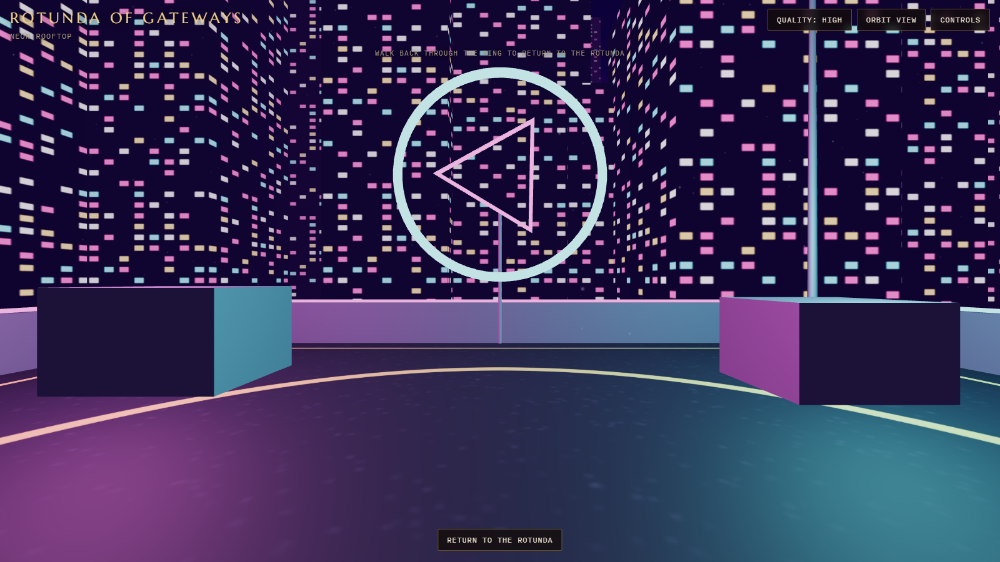
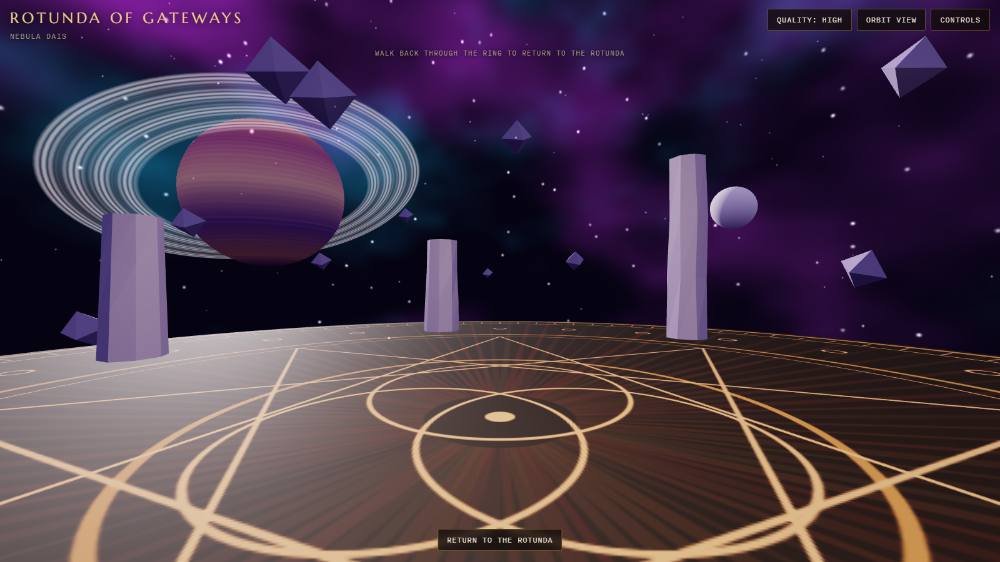
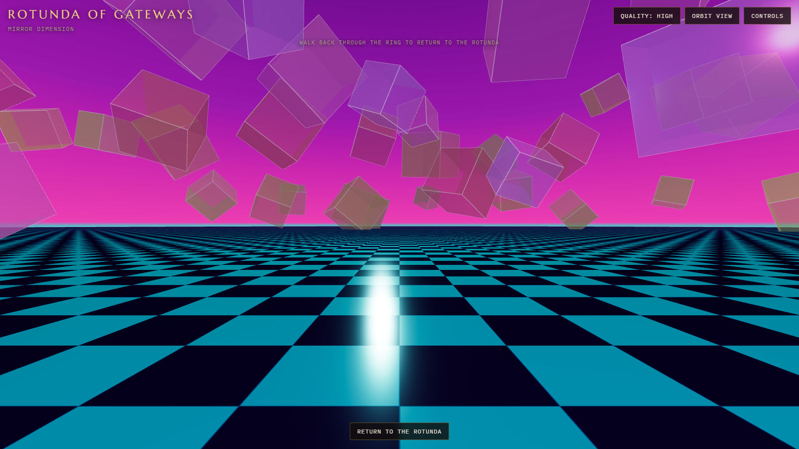
In the rotunda, the main light is a spotlight shining in through the round window and casting soft shadows. An environment reflection map makes the brass reflect the room, while the dark wood stays matte. We removed six real lights from the sconces, which were costing about eight light calculations per pixel. Instead, their warm glow is painted directly into the wall texture, and the flames flicker by changing colour and size.
Hovering and clicking a door use ray casting from the mouse into the scene. Travel is handled as a small set of states (in the rotunda, travelling, in a realm), and input is ignored during a transition. To detect walking through a door, the player’s position is converted into that door’s own coordinates. Crossing from in front of the door’s plane to behind it, within the opening’s width, starts the trip. Each realm has a return ring behind its starting point that works the same way. “Step through” walks the player to the door automatically, steering around the central pedestal instead of through it. Free-standing furniture blocks the player.
A code audit found several costly spots, which we fixed. We merged the Neon Rooftop’s 260 buildings into one mesh, cutting that realm from 125 to 22 draw calls. We share materials across the Mirror Dimension’s cubes, and only the active scene is updated each frame. We capped the pixel ratio at 1.5 and use fewer noise layers in the full-screen sky and lava shaders. A Quality switch (Q) drops to pixel ratio 1 and turns shadows off. An FPS counter (F) shows the frame rate and draw calls.
| Scene | Draw calls | Scene | Draw calls |
|---|---|---|---|
| Rotunda (with shadow pass) | 83 | Desert Dusk | 26 |
| Snow Peak | 69 | Ember Canyon | 73 |
| Aurora Lake | 80 | Neon Rooftop | 22 |
| Ice Cavern | 29 | Nebula Dais | 25 |
| Dark Dimension | 21 | Mirror Dimension | 73 |
On our development machine (NVIDIA RTX 5080), every scene runs at the display’s frame-rate cap. We have not yet measured laptops with integrated graphics; that is the first item in §5.
npm run check opens the app in a browser, enters all nine realms, and reports errors, draw calls and frame rate, saving a screenshot of each scene. npm run video records the demo video. It controls the browser’s clock and saves one frame at a time, so the video is smooth no matter how fast the scene renders.
Live: open the demo link above. Locally: npm install, then npm run dev. Build: npm run build (multi-file) or npm run build:single (one HTML file). Rebuild the Blender models: python blender/build_all.py. Controls: WASD/arrows to walk, Shift to run, drag to look, click a door or press 1–3 to select it, [ ] to change realm, Enter to step through, O for orbit view, Q for quality, F for the FPS counter.
Tools: three.js r128, Vite, Blender 5.1 (Python API), Playwright (automated testing and video capture). AI coding assistance (Claude Code) was used for parts of the implementation and testing.